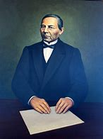
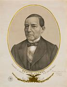
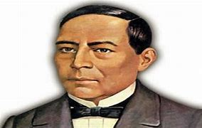
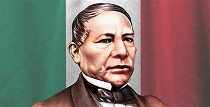

Oscar Salazar Cisneros Plantel 186 Teotongo Materia:Diseño Web.


Soy Oscar Salazar me gustan mucho las motos, escuchar corridos Tumbados al igual que dibujar.

Benito Juarez
Benito Juárez fue un destacado político y jurista mexicano, conocido como "El Benemérito de las Américas". Nació el 21 de marzo de 1806 en San Pablo Guelatao, Oaxaca, y falleció el 18 de julio de 1872 en la Ciudad de México.
Carrera política
Juárez ocupó varios cargos importantes, incluyendo el de gobernador de Oaxaca y presidente de México. Durante su mandato, promovió reformas liberales como la separación entre la Iglesia y el Estado, la libertad de prensa y la reforma agraria
Logros y desafíos
Su presidencia estuvo marcada por la Guerra de Reforma y la intervención francesa en México. A pesar de estos desafíos, Juárez es recordado por su compromiso con la justicia social y la modernización del país2
   